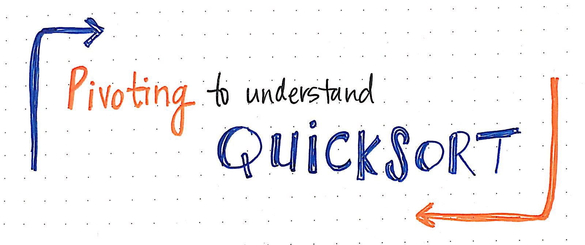

QuickSort

文件名：QuickSort.h
文件名：QuickSort.cpp
1. 快速排序概念
快速排序（Quick Sort）由C. A. R. Hoare在1962年提出。它的基本思想是：通过一趟排序将要排序的数据分割成独立的两部分，其中一部分的所有数据都比另外一部分的所有数据都要小，然后再按此方法对这两部分数据分别进行快速排序，整个排序过程可以递归进行，以此达到整个数据变成有序序列。
快速排序是不稳定的算法，时间复杂度在最坏情况下是O(N^2)，平均的时间复杂度是O(N*lgN)。
1.1. Quick Sort 实现思想
快速排序算法是一种基于交换的高效的排序算法，它采用了分治法的思想：
- 1、从数列中取出一个数作为基准数（枢轴，pivot）。
- 2、将数组进行划分(partition)，将比基准数大的元素都移至枢轴右边，将小于等于基准数的元素都移至枢轴左边。
- 3、再对左右的子区间重复第2步的划分操作，直至每个子区间的元素个数不超过Cutoff（阈值）。
- 4、每个子区间内的元素执行插入排序（实践经验小于一定数量后插入排序快于快速排序），然后返回上一调用堆栈。
1.2. 快速排序.h完整代码
1 |
|
1.3. 快速排序.cpp范例代码
1 |
|
1.4. 延伸思考：
假设待排序的数列中有N个数。遍历一次的时间复杂度是O(N)，需要遍历多少次呢？
最多需要遍历N次，至少需要遍历lg(N+1)次。
- (1).为什么最少是lg(N+1)次？
快速排序是采用的分治法进行遍历的，我们将它看作一棵二叉树，它需要遍历的次数就是二叉树的深度，而根据完全二叉树的定义，它的深度至少是lg(N+1)。因此，快速排序的遍历次数最少是lg(N+1)次。 - (2).为什么最多是N次？
将快速排序看作一棵二叉树，它的深度最大是N。因此，快读排序的遍历次数最多是N次。
相关文章